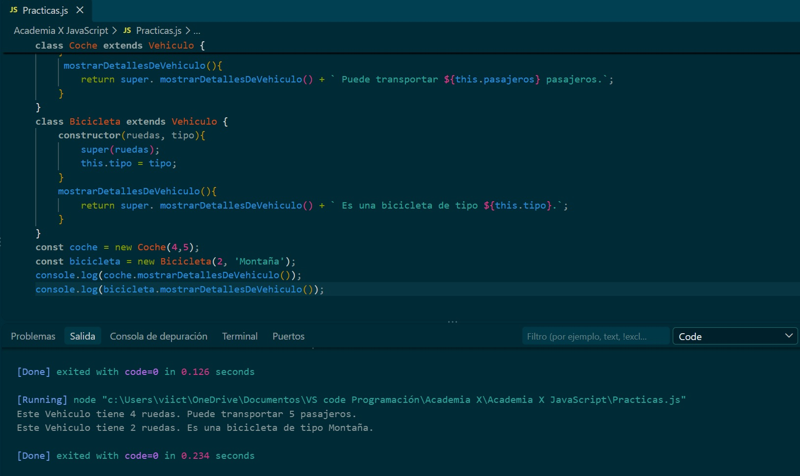

Reto:Programación Orientada a Objetos
1. Crear una clase llamada Vehículo que incluya un constructor y un método para mostrar detalles generales del vehículo.
2. Crea dos subclases de Vehículos cualesquiera que hereden de Vehículo e incluyan un constructor con atributos específicos,
como la capacidad de pasajeros, y un método para mostrar detalles personalizados.
3. Crea una instancia de cada Vehículo y muestra sus detalles en la consola.

Ejecución
1. Crea una clase Vehículo que incluya un constructor que
establezca el número de ruedas y un método para mostrar detalles generales del vehículo.
class Vehiculo {
constructor(ruedas){
this.ruedas = ruedas; //numero de ruedas del vehiculo
}
mostrarDetallesDeVehiculo(){ // método
return `Este Vehiculo tiene ${this.ruedas} ruedas.`;
}
}
2. Crea dos subclases de Vehículos cualesquiera que hereden de Vehículo e incluyan un constructor con atributos específicos, como la capacidad de pasajeros, y un método para mostrar detalles personalizados.
class Coche extends Vehiculo { // extends es para heredar de la clase padre
constructor(ruedas,pasajeros){
super(ruedas); // Llamamos al constructor de la clase padre
this.pasajeros = pasajeros; // Atributo adicional: capacidad de pasajeros
}
mostrarDetallesDeVehiculo(){
return super.mostrarDetallesDeVehiculo() + `Puede transportar ${this.pasajeros} pasajeros.`;
}
}
class Bicicleta extends Vehiculo { // extends es para heredar de la clase padre
constructor(ruedas, tipo){ // Llamamos al constructor de la clase padre
super(ruedas); // Atributo adicional: tipo de bicicleta
this.tipo = tipo; // Sobrescribimos el método detalles de la
}
mostrarDetallesDeVehiculo(){ // metodo que muestra los detalles del vehiculo
return super. mostrarDetallesDeVehiculo()+` Es una bicicleta de tipo ${this.tipo}.`;
}
}
3. Crea una instancia de cada Vehículo y muestra sus detalles en la consola.
const coche = new Coche(4,5); const bicicleta = new Bicicleta(2, 'Montaña'); console.log(coche.mostrarDetallesDeVehiculo()); console.log(bicicleta.mostrarDetallesDeVehiculo());
Codigo
